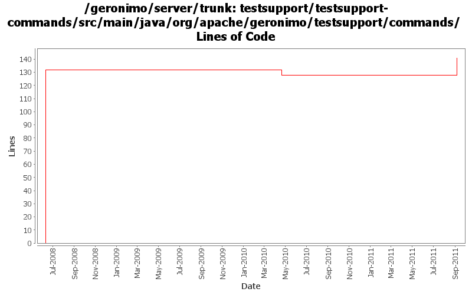

[root]/testsupport/testsupport-commands/src/main/java/org/apache/geronimo/testsupport/commands

| Author | Changes | Lines of Code | Lines per Change |
|---|---|---|---|
| Totals | 4 (100.0%) | 152 (100.0%) | 38.0 |
| gawor | 3 (75.0%) | 135 (88.8%) | 45.0 |
| xiaming | 1 (25.0%) | 17 (11.2%) | 17.0 |
Consider linux commands with .sh suffix
17 lines of code changed in 1 file:
GERONIMO-5262: Updated testsuites to use maven-failsafe plugin and enabled some tests to run
1 lines of code changed in 1 file:
close jmx connection
7 lines of code changed in 1 file:
Initial testsuite for command line tools. Patch from YunFeng Ma but with bunch of modifications (GERONIMO-4074)
127 lines of code changed in 1 file: